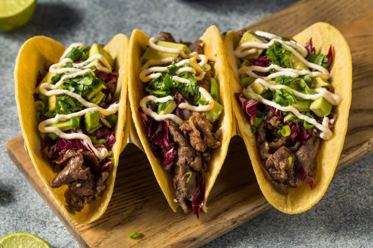

TACOS

Mexican food consisting of a small hand-sized corn- or wheat-based tortilla topped with a filling
"Crispy or soft corn or wheat tortilla that is folded or rolled and
stuffed with a mixture (as of seasoned meat, cheese, and lettuce)".
INGREDIENTS:
- 1 lb. 90% to 93% lean ground beef
- 1 Tablespoon chili powder
- 3/4 teaspoon salt
- 1/2 teaspoon dried oregano
- 1/2 teaspoon garlic powder
- 1/4 teaspoon ground black pepper
- 1/2 cup tomato sauce
- 1/4 cup water
- 12 taco shells - either hard shells or small 6-inch soft flour tortillas will work
- Optional Taco Toppings: shredded cheese shredded lettuce, chopped tomatoes,
diced red onion, taco sauce, sour cream, guacamole, etc.
How to Make Tacos?
STEPS ON HOW TO MAKE TACOS:
- Break apart lean ground beef in a skillet over medium-high heat.
- Add chili powder, cumin, salt, oregano, garlic powder, and pepper.
- Cook until the beef is browned.
- Add tomato sauce and water to the meat.
- Cook until some liquid has evaporated, but the meat is still saucy.
- Spoon 2 tablespoons of the taco meat into hard taco shells or small soft tortillas.
- Top the tacos with your favorite traditional taco toppings.
TACO TOPPINGS
- Shredded cheese
- Shredded lettuce
- Chopped tomatoes
- Diced onion
- Sliced avocado
- Sour cream
- Guacamole